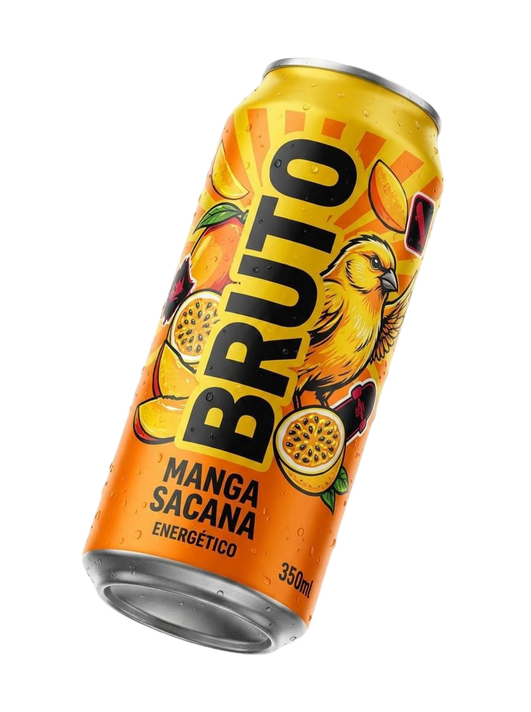

SOL DE RACHAR • 350ML
MANGA SACANA
Doce na medida certa para baixar sua guarda, ácido o suficiente para ligar o motor no talo.
Manga madura com porrada de maracujá gelado, feito para o asfalto quente, o rolê improvisado e quem não segue roteiro.

ALTA VOLTAGEM • 350ML
GUARANÁ BAIXARIA
O combo clássico brasileiro elevado ao limite.
Guaraná raiz, erva-mate tostada e limão espremido no talo para dar aquele tranco limpo no sistema.
É energia de quem chega antes, fica até o fim e ainda puxa o próximo destino.

CARGA AMAZÔNICA • 350ML
AÇAÍZUDO
Direto do norte sem pedir licença.
Açaí denso cruzado com a acidez selvagem do cupuaçu para quem encara trilha fechada, virada de noite ou qualquer parada fora do mapa.
Zero frescura, energia bruta até a última gota.

RESSACA ZERO • 350ML
COCO SALIENTE
Cremoso, gelado e cheio de marra.
Água de coco fresca com banana madura numa mistura tropical que hidrata enquanto liga o motor no máximo.
O combustível oficial do pós-praia, do skate no fim de tarde e de quem transforma qualquer canto em litoral.